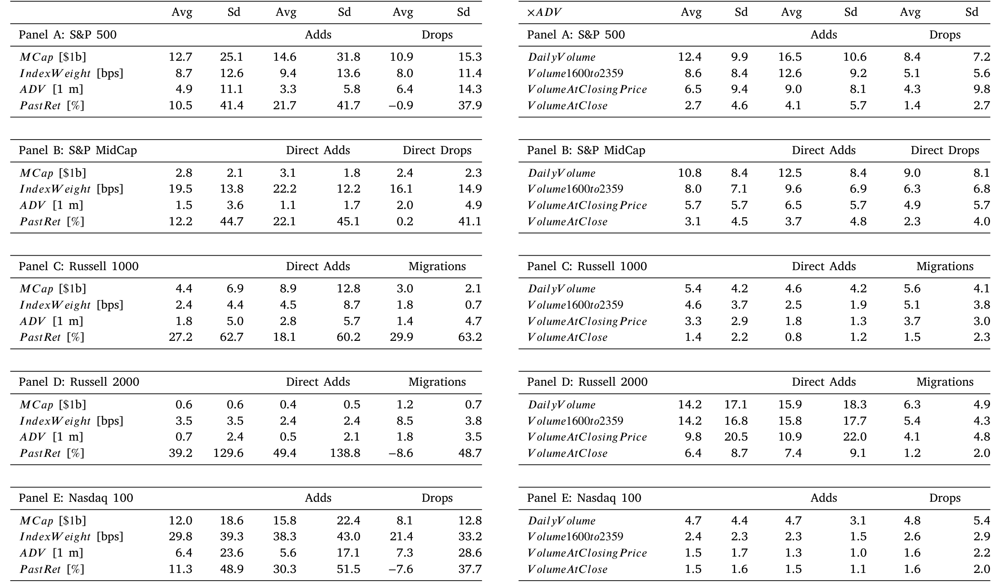
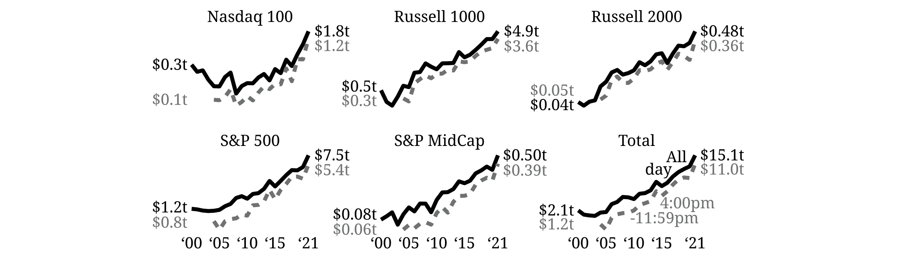
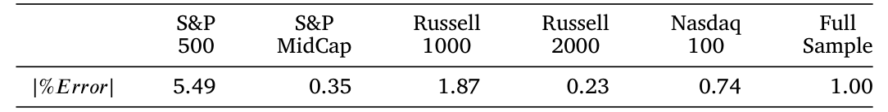
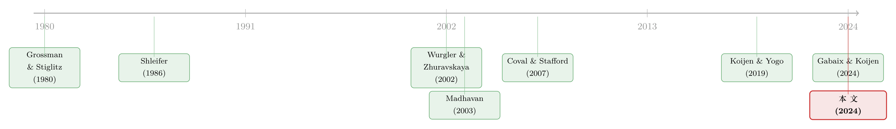

你以为被动投资只占 16%？它其实是这个数的两倍
本文读的是 Chinco & Sammon (2024, Journal of Financial Economics)：他们绕开「持仓披露」这条老路，改从指数重构日 (reconstitution day) 那一根突兀的成交量尖峰里，反推出究竟有多少钱在跟踪指数。结论是——2021 年美国股市的被动持股份额不是大家常说的 16%，而是 33.5%，整整翻了一倍。
1 引言：一个「被低估了一半」的数字
先问你一个问题：美国股市里，被动投资者到底持有多大比例？
如果你读过近些年任何一篇讨论被动投资崛起的论文，多半会脱口而出一个数字：16%。这个数字来自美国投资公司协会（Investment Company Institute, ICI）：2000 年，美国指数型共同基金和 ETF 加起来管理着 $0.4t，约占股市市值的 3%；到 2021 年，这个数字飙到了 $7.2t，占市值的 16%。增长惊人，毫无争议。
但作者在标题里直接把话挑明了：The passive ownership share is double what you think it is——你以为的那个数，只是真相的一半。标题里的那个「你 (you)」，指的正是「忘了开放式基金只持有市场一小块、把被动投资在共同基金行业里的市占率，误当成它在整个市场里的持有份额」的研究者们。
问题出在哪？出在 16% 这个数，只数了「指数基金」这一种被动投资者。可被动投资远不止指数基金一种形态：
- 很多大型养老金、主权财富基金，自己在内部跑一套指数跟踪组合，这叫内部指数化 (internal indexing)；
- 有人通过单独管理账户去复制指数，这叫直接指数化 (direct indexing)，常常是为了税务；
- 还有大量主动经理，被拿去和某个指数做业绩比较，于是悄悄把一部分仓位贴着指数走，这叫暗中指数化 (closet indexing)。
这三类钱，统统不在 ICI 的口径里。因为它们不像公募基金那样背着强制的持仓披露义务。于是一个尴尬的局面出现了：我们能精确数清楚的，恰恰是被动世界里最「守规矩、最透明」的那一小部分；而真正难数的那一大块，只能靠猜。
16% 甚至连一个下界都算不上。作者在附录 B 里指出：光是先锋（Vanguard）一家，2021 年就有约 $2.25t 的股票仓位在跟踪 CRSP 系列指数，而这部分数据他们手上根本没有——这一笔就相当于 ICI 那个 16% 基数的 5%。换句话说，连「指数基金」这个最窄的口径，都没被数全。
那么，怎么去数那些「不披露」的钱？这正是这篇论文最漂亮的地方。
2 一个聪明的「反推」：从成交量倒推 AUM
直接问是问不出来的。作者换了个角度：不去看谁持有，而去看谁在交易，并且在什么时点交易。
它的逻辑出奇地简单。绝大部分被动再平衡，都集中发生在重构日收盘那一瞬间的一根巨大成交量尖峰里。于是每当一只股票被加入或剔除某个指数，作者就问一句话：
「要有多少钱在跟踪这个指数，才能解释我们在重构日收盘时看到的、那一股突如其来的成交量？」
来看一个真实的例子——Yeti Holdings（代码 YETI）。2021 年 6 月 25 日（周五）收盘，它从罗素 2000 升入罗素 1000，进入时的权重是 0.019%。按理说，被动投资者完全可以提前几天慢慢建仓：一个暗中指数化的主动经理、一所自己做内部指数化的大学捐赠基金，都没有「必须等到收盘那一刻才动手」的义务。所以你大概会预期，Yeti 的成交量在 6 月 25 日之前会慢慢爬升。
可数据里完全不是这样（这正是论文图 1 的故事）：升入指数之前，Yeti 的成交量平平无奇；到了重构日当天，成交量突然蹿到 11.0m 股，其中 9.2m 是在收盘集合竞价或之后成交的。事前没有任何铺垫，事后也迅速回落——所有人，包括那些「本可以提前动手」的暗中指数者，都挤在收盘这一个点上交易。
那么，假设 Yeti 这一整根成交量尖峰都来自罗素 1000 的再平衡。它的收盘价是 $92.07。在这个假设下，跟踪罗素 1000 的被动投资者，要花掉自己财富的 0.019% 去买入价值 11.0m × $92.07 ≈ $1.0b 的 Yeti。反过来一除：
$$ AUM_{indexed} \;=\; \frac{ReconDayVolume \times Price}{IndexWeight} \;=\; \frac{11.0\text{m} \times \$92.07}{0.019\%} \;\approx\; \$5.3\text{t} $$
一只小盘股升入指数的那一根成交量尖峰，就这样替我们「称」出了 $5.3t 的指数跟踪资金。这就是整篇论文的内核。
3 识别策略：这个反推凭什么成立？
把上面那一步写成论文里的核心恒等式——它本质上是一个会计意义上的等式，左边是「实际买进的金额」，右边是「按权重应当持有的头寸价值」：
恒等式本身没什么稀奇，稀奇的是它居然能识别出被动 AUM。这背后藏着一个必须被验证的关键假设：重构日的那根成交量尖峰，几乎全部来自被动再平衡，而不是主动交易者趁热闹凑进来的噪声。作者怎么证明这一点？
第一，事前事后都没有「漏水」。 如果有别的交易者在策略性地提前或延后下单，成交量应该在重构日前后被「抹平」一些。但数据里，指数增删股票在重构日前后几天的成交量并没有凹陷。
第二，也是真正关键的一步——同一天、同一指数的多只增删股票，给出几乎一致的 AUM 估计。 这是一个极强的内部一致性检验。还是 6 月 25 日，Sunrun（RUN）也升入了罗素 1000，但它的权重更高（0.027%）、价格更低（$54.38）。如果被动 AUM 真是 $5.3t，那么 Sunrun 需要的重构日成交量应当是 $5.3t × 0.027% / $54.38 ≈ 26.4m 股。数据里 Sunrun 当天实际成交了 26.8m 股——几乎分毫不差！
接着，一个自然的问题是：这只是 Yeti、Sunrun 两个巧合吗？不是。作者指出，平均而言，对同一天、同一指数的不同增删股票做这套反推，得到的估计彼此相差在 ±1% 以内——尽管每一次计算用的价格和权重都不一样。每只股票的成交量，都不多不少地等于被动再平衡所需要的那个量；留给主动经理去「解释」的部分，所剩无几。
这一步之所以漂亮，是因为它把一个「测量」问题，变成了一个可以反复交叉验证、还能算标准误的问题。过去靠持仓数据猜被动份额，只能得到一个模糊的区间；而在这套方法下，每一只增删股票都独立产出一个点估计——既能取平均，又能给出不确定性。
那「掮客在中间倒手、人为制造成交量」的可能呢？作者也堵死了：图 1 显示 Yeti 那 11.0m 股里有 9.2m 集中在收盘竞价或之后，其中 7.7m 是专门挂钩收盘竞价的交易。交易在一瞬间全部完成，掮客根本没有时间「早上从罗素 2000 投资者那里买、下午卖给罗素 1000 投资者」来把成交量翻倍。
4 数据
作者把这套反推，应用到五个最主流的指数上：标普 500、标普中盘 400、罗素 1000、罗素 2000、纳斯达克 100。
- 指数成分与权重：罗素 1000/2000 的每日权重，是花了
$7,500直接从 FTSE Russell 买来的；标普和纳斯达克的权重则从季末已知值插值得到（标普 500 含官方自由流通调整因子，其余几个用 CRSP 市值、不含流通调整）。值得一提的是，作者还问过 MSCI 报价——$240k，贵到只能放弃。这恰恰反衬出：愿意支付这笔信息费的被动投资者，绝不是理论里那种「无知交易者」。 - 成交量：日度成交量
DailyVolume来自 CRSP，覆盖 2000–2021 全样本；盘中的细颗粒度数据来自 TAQ 毫秒级合并交易库，从 2004 年用到 2021 年。 - 重构日成交量的多种口径：除了全天成交量，作者还构造了
Volume1600to2359（收盘 16:00 至 23:59 的成交量）、VolumeAtClosingPrice（以收盘价成交的量）、VolumeAtClose（收盘竞价量）等多个代理变量。
对前 22 个交易日的平均成交量做标准化，得到基准量 ADV：
$$ ADV_n \;=\; \frac{1}{22}\sum_{\ell=1}^{22} DailyVolume_n(t_{Recon}-\ell) $$
下面这张表把增删股票在重构日的成交量（已用 ADV 标准化）摆在一起——你能直观看到，重构日的成交量相对平日是何等的「尖峰突起」。

Table 2: then describes the reconstitution-day volume experienced
5 主要结果：33.5%，而且不止 33.5%
把五个指数、每一次增删事件的点估计逐年平均、再加总，作者得到了那条核心曲线：2021 年，跟踪这五个指数的被动投资者，合计持有了美国股市的 33.5%。
33.5% 比 ICI 的 16% 多了一倍还不止。它意味着：指数基金每持有 \$1，市场上就有另外 \$1 由别种被动投资者持有。 而且别忘了，33.5% 只覆盖了五个指数；ICI 的口径却囊括了所有指数基金。若把先锋那 $2.25t 的 CRSP 跟踪仓位也算进来，这个数还会升到 38.5%。
这个结论并非孤证。作者用一系列不同的成交量口径去做稳健性检验——如下图所示，无论你用全天成交量、盘后成交量、还是收盘竞价量，估出来的被动份额都明显高于 ICI 那条基准线；图中实线对应的，正是 33.5% 这套基准数字。

Figure 4: shows the average implied across all stocks ThesolidlinecorrespondstotheheadlinenumbersreportedinFig.2
更难得的是精度。传统上靠持仓数据估被动份额，得到的是一个很宽的区间；而这套方法因为能对每只股票独立反推，可以直接刻画测量误差的量级。下表报告了平均测量误差——它小到足以让 33.5% 这个数字「站得住」。

Table 5: reports the average magnitude of the measurement error
值得一提的是，行业界其实早就隐约知道 16% 偏低：贝莱德 2017 年的报告把份额放在 25.6%（Novick et al., 2017），彭博情报 2023 年说至少 19%（Seyffart, 2023）。这篇论文的贡献，是第一次给了一个有方法论支撑、可计算标准误、还能交叉验证的数字。
6 真正的反转：价格冲击发生在需求冲击「之前」
如果文章到这里就结束，它只是一篇「把被动份额数对了」的好论文。但真正让我觉得它有分量的，是下面这个反转。
为什么交易会如此极端地集中在重构日收盘？因为被动投资者预先安排 (prearrange) 了再平衡交易。他们和中间商签约，约定「无论重构日收盘价是多少，都按那个收盘价成交」。一度，给这种交易提供流动性的做市商赚得盆满钵满——高盛的指数再平衡台，据说人均创收「几乎超过公司任何其他部门」。
而这恰恰解释了一个长期让人困惑的现象：为什么如今指数增删股票，在重构日当天价格几乎不动？
过去的直觉是：被动需求是无弹性的，一大笔买盘砸下来，价格总该动一动吧（Coval and Stafford, 2007；Lou, 2012）。可重构日价格纹丝不动，于是天真的解读会说：「市场在重构日极有弹性。」
但真相恰恰相反。价格之所以在重构日不动，是因为被动投资者的价格冲击早就发生过了——发生在他们几周前预先安排交易的那个时点上，而不是需求冲击落地的重构日。 用论文的话说：他们的 price impact occurs before their demand shock。所以，如果你只盯着重构日去算需求弹性，你会得出「市场极有弹性」的错误结论；正确的算法，必须把交易被安排好的那一刻的价格变化也算进去。这一笔账一旦算对，被动需求依旧是高度无弹性的——这正是对 Gabaix 和 Koijen (2024) 无弹性市场假说 (Inelastic Markets Hypothesis) 的有力支持。
特斯拉提供了一个绝佳的「反面案例」。2020 年 12 月 18 日特斯拉被纳入标普 500，但 S&P Dow Jones 11 月 17 日的初次公告让很多人措手不及，连「特斯拉会怎么被加进来、替换掉谁」都充满不确定性。结果被动投资者来不及预先安排交易，特斯拉的价格在重构日真的跳了。当这套「预先安排」的交易机器失灵时，无弹性需求的价格冲击立刻原形毕露。
这也顺手给理论界提了个醒：很多论文沿用 Grossman and Stiglitz (1980) 的范式来刻画被动投资的兴起，假设被动份额是共识 (common knowledge)、且投资者在看到价格之后才决定需求。作者直言，这两个假设都不对：被动份额根本不是市场共识（否则也不用这篇论文来重新估计了），而大量被动投资者恰恰是在没看到收盘价之前就把交易锁定了。
7 文献脉络
这篇论文坐落在一条很长的研究脉络上。
最早，人们关心的是一个朴素的问题：股票的需求曲线到底向不向下倾斜？Shleifer (1986)「Do demand curves for stocks slope down?」与 Harris and Gurel (1986) 用指数纳入事件给出了肯定的回答——一只股票被加入标普 500，会带来可预测的价格压力。Wurgler and Zhuravskaya (2002) 进一步问：套利为什么没有把这条向下的需求曲线抚平？

接着，研究的焦点转向了重构这件事本身的微观机制：Madhavan (2003) 系统刻画了「罗素重构效应」；Barberis、Shleifer 和 Wurgler (2005) 指出指数纳入还会改变股票之间的共动与流动性。再往后，随着 ETF 的爆发式增长，Ben-David et al. (2018) 一类研究记录了它带来的更高收盘成交量与更大波动。
然后，一条平行的线索是「被动其实没那么被动」：Cremers and Petajisto (2009) 把暗中指数化摆上了台面，提醒我们主动经理也会贴着指数走。
但真正关键的转折，来自需求体系资产定价 (demand-system asset pricing)。Koijen and Yogo (2019) 让「谁持有、需求弹性多大」成为定价的中心变量（关于这条线，可参见《弱替代：因子动物园是从哪里冒出来的？》 与《为什么「理性投资者」也会拒绝换股？》）；Gabaix and Koijen (2024) 则提出了无弹性市场假说。这两条线一旦汇合，一个尖锐的问题就浮出水面：如果需求弹性如此重要，那我们连「有多少钱是被动的」都没数对，又谈何刻画弹性？
这篇论文，正落在这个交汇点上——它既是一篇「把被动份额数对」的测量论文，也是一份支持无弹性市场假说的实证证据。它与同样关注指数重构与市场构成的 Greenwood and Sammon (2024) 互为表里（顺带一提，那篇论文的中文评述见《你以为买的是「整个市场」，其实买的是一套交易规则》）。
8 评论与延伸（Q&A + 研究方向）
(a) 几个可能的疑问
Q：33.5% 会不会把同一笔钱在不同指数里重复计数了？
这是最该担心的点。一只股票可能同时是某主动经理「暗中盯住罗素 1000」和「暗中盯住标普 500」的标的。作者的口径是：凡是在重构日收盘那一个点被再平衡的持仓，都算作被动持仓——它不在乎谁拥有这笔资产。这一定义下，跨指数的重叠在原则上被「事件归属」隔开（每次反推只针对某一个指数的某一次增删），但要完全排除「同一笔钱响应多个指数」的可能，仍依赖于五个指数事件之间不互相污染这一假设。
Q：把整根成交量尖峰都归给被动，会不会高估？
会有这个风险，但作者用「同一天、同一指数的不同增删股票，估计彼此相差
±1%」这个内部一致性检验，极大地压住了它。如果尖峰里掺了大量与权重无关的主动噪声，不同股票（价格、权重各异）算出来的 AUM 不可能这么整齐地收敛到同一个数。
Q：那这是不是反而低估了？毕竟只用了五个指数。
对，作者自己也强调
33.5%是个偏保守的数：它没算 MSCI World、CRSP 全市场等指数。光把先锋的$2.25tCRSP 仓位补上，就会升到38.5%。所以16%连下界都不是，而33.5%更像一个「五指数口径」的下界。
Q：重构日价格不动，不就说明市场很有弹性吗？这跟「无弹性」不矛盾？
这正是全文最反直觉的一点。价格不动，不是因为需求有弹性，而是因为被动投资者的价格冲击在几周前「预先安排交易」的时点就已经发生了。把弹性算在重构日，是把冲击发生的时点搞错了。特斯拉那个「来不及预先安排、价格就跳了」的案例，是对这一点最干净的反证。
Q：这套方法对债券、对其他资产类别能用吗？
原则上能，但前提是该市场也存在「集中在某个时点的被动再平衡 + 可观测的成交量与权重」。股票有清晰的重构日和收盘竞价，债券市场的指数再平衡更分散、成交更不透明，直接搬过来会更难——但这恰恰是一个有意思的开放问题（见下）。
Q：和 ICI 的 16% 比，这篇的数字算不算「另一种东西」？
某种意义上是。ICI 数的是「法律意义上的指数基金」，这篇数的是「行为意义上的被动者」——任何在重构日收盘按指数权重机械再平衡的钱，都被算进来，哪怕持有人自认是主动投资者。两者回答的不是同一个问题，但对「市场里有多少钱在机械地跟随指数」这个真问题而言，后者显然更贴切。
(b) 几个可能的研究问题与提案
1. 把「重构日成交量反推法」搬到公司债市场。 【经济故事】公司债指数（如 Bloomberg US Agg、ICE BofA 系列）每月末再平衡，被动跟踪资金近年快速膨胀。如果能像本文一样，从月末换券日的成交量尖峰反推被动 AUM，就能首次给信用市场一个「行为口径」的被动份额，而不只是 ETF 持仓口径。 【可行性】中。挑战在于债券成交分散、无集中收盘竞价，且 TRACE 成交数据虽公开但缺少股票那样干净的「收盘那一瞬」。需要把「再平衡窗口」从一个时点放宽成几天，并论证窗口内成交确实由指数权重驱动。
2. 外资被动持有人在重构日的「缺席」或「错峰」。 【经济故事】外国机构未必受美国披露规则约束，也可能因时区、结算与汇率对冲而无法精确卡在美东收盘那一刻再平衡。如果外资被动钱在重构日尖峰里「欠配」，本文方法就会系统性地低估外资被动份额——而这本身就是一个可被检验、并能与外资持有数据交叉印证的命题。 【可行性】中。需要把本文的事件级反推，与 13F / TIC 等外资持有数据在股票层面对接，识别「成交量尖峰里有多少缺口对应外资」。识别难点在于把外资与「错峰交易的国内主动经理」区分开。
3. 被动份额与公司债流动性的因果链。 【经济故事】本文揭示被动的价格冲击发生在「预先安排交易」时点，而非需求落地时。若把这一逻辑移到信用市场，被动占比上升可能意味着：日常流动性看似充裕，但压力集中在再平衡安排时点，放大了某些日子的脆弱性。这与公司债基金在加息期的脆弱性研究天然相关（参见《加息前夜的悄然撤离》）。 【可行性】中偏低。需要识别「债券指数被动占比」的外生变化（如某债券临界纳入/剔除指数），再看其再平衡窗口前后的买卖价差与冲击成本。指数临界点可作为断点，但债券指数纳入规则远比罗素的市值排序复杂。
4. 用「预先安排交易」时点重估需求弹性。 【经济故事】本文指出，正确的弹性计算必须用交易被安排好那一刻的价格变化。一个自然的延伸是：系统地定位这些「安排时点」（公告日、可预测的临界日），在这些时点上重新估计指数纳入的价格弹性，看它是否真的像 Gabaix–Koijen 所预言的那样无弹性。 【可行性】高。所需数据（公告日、价格、权重）本文已具备，识别策略清晰——把事件窗口从重构日前移到「可预测/已公告」的时点即可。
我的判断
这篇论文最大的贡献，是把一个看似无解的测量难题（怎么数那些不披露的被动钱），转化成了一个可识别、可交叉验证、可算标准误的问题。「±1% 的内部一致性」这一条，几乎是我读到的最有说服力的间接识别证据之一——它让「整根成交量尖峰都来自被动」这个核心假设，从一个信念变成了一个能被数据反复检验的命题。而「价格冲击发生在需求冲击之前」这个反转，则把测量结果一路推到了对无弹性市场假说的实证支持上，格局一下子打开了。
要说对识别的担忧，我会盯住两点。其一，跨指数与跨年的口径稳定性：把「在收盘点再平衡的钱」一律算作被动，会把一部分自认主动的钱也算进来——这在定义上没错，但「33.5%」这个数字在传播时极容易被误读成「指数基金口径」，作者对此已经很克制，读者却未必。其二，这套方法的有效性高度依赖于「被动者都卡在收盘那一瞬」这一制度特征；一旦市场结构变化（比如更多直接指数化采用错峰、算法化再平衡），尖峰会被抹平，方法的识别力也会随之衰减。
后续我最想看到的，是把这套「从交易时点反推持有结构」的思路，推到信用市场和外资持有人上去——那里既是被动化正在加速、数据却最稀缺的地方，也正是「谁持有、何时交易、如何冲击价格」这个问题最亟待回答的地方。
参考文献
- Barberis, N., Shleifer, A., Wurgler, J. (2005). Comovement. Journal of Financial Economics 75(2), 283–317.
- Ben-David, I., Franzoni, F., Moussawi, R. (2018). Do ETFs increase volatility? Journal of Finance 73(6), 2471–2535.
- Chinco, A., Sammon, M. (2024). The passive ownership share is double what you think it is. Journal of Financial Economics 157, 103860.
- Coval, J., Stafford, E. (2007). Asset fire sales (and purchases) in equity markets. Journal of Financial Economics 86(2), 479–512.
- Cremers, M., Petajisto, A. (2009). How active is your fund manager? A new measure that predicts performance. Review of Financial Studies 22(9), 3329–3365.
- Gabaix, X., Koijen, R. (2024). In search of the origins of financial fluctuations: The inelastic markets hypothesis. Working Paper.
- Greenwood, R., Sammon, M. (2024). The disappearing index effect. Working Paper / Journal of Finance.
- Grossman, S., Stiglitz, J. (1980). On the impossibility of informationally efficient markets. American Economic Review 70(3), 393–408.
- Harris, L., Gurel, E. (1986). Price and volume effects associated with changes in the S&P 500 list. Journal of Finance 41(4), 815–829.
- Koijen, R., Yogo, M. (2019). A demand system approach to asset pricing. Journal of Political Economy 127(4), 1475–1515.
- Lou, D. (2012). A flow-based explanation for return predictability. Review of Financial Studies 25(12), 3457–3489.
- Madhavan, A. (2003). The Russell reconstitution effect. Financial Analysts Journal 59(4), 51–64.
- Novick, B., Cohen, S., Madhavan, A., et al. (2017). Index Investing Supports Vibrant Capital Markets. Technical Report, BlackRock.
- Seyffart, J. (2023). Passive Index Ownership Levels. Technical Report, Bloomberg Intelligence.
- Shleifer, A. (1986). Do demand curves for stocks slope down? Journal of Finance 41(3), 579–590.
- Wurgler, J., Zhuravskaya, E. (2002). Does arbitrage flatten demand curves for stocks? Journal of Business 75(4), 583–608.